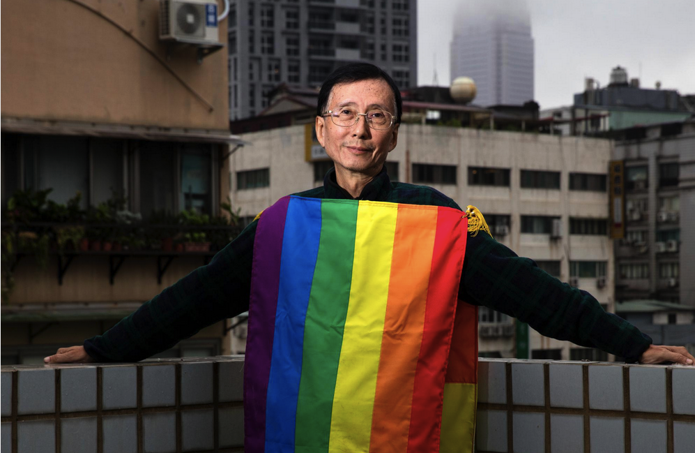

| Biography | Person(s) |
|---|---|
| Chi Chia-Wei was the first person to come out publicly as gay on national television in 1986, while organizing a press conference to announce his sexuality and his launch of a campaign to prevent the spread of HIV/AIDS. Chi helped make Taiwan the first nation in Asia to legalize same-sex marriage. In 1986, Chi applied for a marriage license and was denied. He reapplied 3 more times but in 2013, when he applied and was denied again, Chi appealed the decision to the Taipei city government’s Department of Civil Affairs. In October 2016, Queermosa presented Chi with its first Queer Pioneer Award. On May 24, 2017, Taiwan’s Constitutional Court ruled that same-sex couples could marry, beginning in May 2019. |  |
Historical Figures
Audre Lorde 1934 - 1992
Audre Lorde began writing poetry in high school. After a poem was rejected for a class assignment, she submitted it to Seventeen magazine, and it became her first professional publication. While pursuing her education at the National University of Mexico, Lorde accepted her identity as a lesbian and a poet. When she returned to the U.S., she socialized at lesbian bars while taking classes at Hunter College. Lorde graduated from Hunter College in 1959 and attained a master's degree in library science from Columbia University in 1961. She had two children with her husband, a white gay man named Edward Rollins. Throughout the 1970s and 1980s, Lorde published regularly in magazines and anthologies. She also became active in civil rights, antiwar, and women’s movements. Lorde was diagnosed with breast cancer in 1977, followed by a diagnosis of liver cancer 6 years later. She died from cancer on November 17, 1992.
Historic Events
Pink Triangle – 1933
In Nazi Germany, pink triangles were used as concentration camp badges to identify male prisoners who were sent there because of their homosexuality. In 1995, after a decade of campaigning, a pink triangle plaque was installed at the Dachau Memorial Museum to commemorate the suffering of gay men and lesbians. Originally intended as a badge of shame, the pink triangle (often inverted from its Nazi usage) has been reclaimed as an international symbol of gay pride and the gay rights movement.

June 28, 1969 - Stonewall Riots
In the early morning hours of Saturday, June 28, 1969, nine policemen enter the Stonewall Inn, a gay bar on Christopher Street in Greenwich Village, and take several patrons into custody in accordance with a New York law authorizing the arrest of anyone not wearing gender-appropriate clothing. The ensuing riot lasts for 5 days.